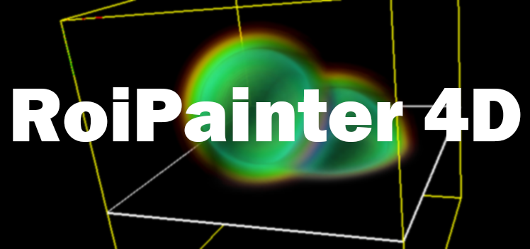

4D Volume Segmentation Software, RoiPainter4D
back to top

概要
RoiPainter4Dは，X線CTやMRI装置で撮影された四次元画像を観察・領域分割するためのソフトウエアです．
井尻敬（芝浦工業大学准教授）が主体となり，芝浦工業大学の学生の協力のもと開発しています．
ソースコードはGithubにて公開を予定しています．
Github/InteractiveGraphicsLab/RoiPainter4D
RoiPainter4Dの起動には，Visual Studio 2017 が必要です．起動しない場合は以下をインストールしてください．
Visual Studio 2017
本ソフトウエアは研究のためのプロトタイプです．
開発者，開発協力者，及び，開発者所属機関は，本ソフトウエアを利用して起きた損害に関し責任を負いません．
Download
現在準備中です．
利用方法
現在準備中です．